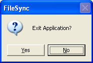

Text and XML View
This view compares line based text files with several synchronization and edit functions:
3.3 External Change Notification
Toolbar buttons or menu View:
| Prev Diff | Show previous difference above |
| Next Diff | Show next difference below |
All changes are recorded for Undo/Redo using the menu Edit or the toolbar buttons
Toolbar buttons or menu Edit allows copy/paste using the system clipboard:
| Cut | Cut selected lines |
| Copy | Copy selected lines |
| Paste | Insert lines from clipboard |
The following toolbar buttons are provided to synchronize file contents (from left to right):
| Insert before | Inserts the selected lines before the selection |
| Replace | Replaces the selected lines > |
| Insert after | Inserts the selected lines after the selection |
| Delete | Deletes the selected lines |
The arrow direction depends on the selected side. Some buttons may be disabled depending on the local R/W mode.
These functions are also available from the menu Edit.
Show help in a browser window
To search for a string the following toolbar is provided:
If you try to close the window or exit the application (menu File / Exit) you get the following dialog:

| Yes | Exit application |
| No | Return to Dir View |
If the application was started without a DirView using command line parameters that dialog is not shown.
Left of the path ComboBox you find the side toolbar:
Open a file for the relevant side, see details
The file mode is indicated by the mode buttons for each file and may be changed like:
The background color indicates the real file mode. Because synchronization function enabling depends on the file mode, some local modes have been added.
The final function rights are indicated by the padlock state.
External changes of the shown files are recognized in the background. The status line and the mode button indicate a change:
Pressing that button will reload the view like F5, see menu View / Check.
This button is enabled if the file was changed but not saved.
The menu Edit / Preferences opens the following dialog:
| Tab Size | Tab expanding size (default = 4) |
| Compact Spaces | Reduce multiple spaces to a single one |
| Encoding | Default 8 bit, UTF-8 or Unicode |
| Unix format | Using single line separation character \n instead of Windows \n\r |
| Local Read Only | see toolbar button File R/W Mode |
| File Read Only | see toolbar button File R/W Mode |